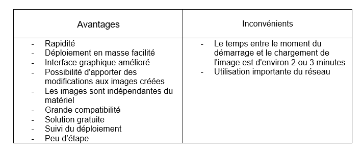

En plus de réduire le temps de déploiement et de normaliser les images de bureau et de serveur,
MDT vous permet de gérer plus facilement la sécurité et les configurations en cours.
MDT s’appuie sur les principaux outils de déploiement du kit de déploiement et d’évaluation Windows (Windows ADK)
Windows Automated Installation Kit (appelé en français Kit d'installation automatisée Windows,
est une suite d'outils et de technologies conçues par Microsoft pour faciliter le déploiement
des images des systèmes d'exploitation sur des ordinateurs avec des conseils et des fonctionnalités supplémentaires
conçues pour réduire la complexité et le temps requis pour le déploiement dans un environnement d’entreprise.
Le Kit de déploiement et d’évaluation de Windows ADK et le module complémentaire PE Windows sont les outils
dont vous avez besoin pour personnaliser les images Windows pour un déploiement à grande échelle,
et pour tester la qualité et les performances de votre système, ses composants ajoutés et les applications
qui s’y exécutent. MDT prend en charge le déploiement de Windows 10, ainsi que Windows 7, Windows8.1 et Windows Server.
Il offre plusieurs fonctionnalisées qui sont : Ajouts de comptes administrateurs locaux, Participation automatisée CEIP et WER,
Assistant de déploiement amélioré, Surveillance, Journalisation, Application du pack GPO, Migration utilisateur hors connexion USMT,
Installation ou désinstallation des rôles ou fonctionnalités Windows. On peut modifier avec MDT le partages de déploiement,
Images de démarrage, Systèmes d’exploitation, Applications, Référentiel de pilotes, Packages, Séquences de tâches,
Modèles de séquences de tâches, profils de sélection.

Présentation de l'outil sysprep
Sysprep est l'utilitaire Microsoft qui réalise la capture du système d’exploitation de Windows et permet de préparer l’os
pour faire une personnalisation du système, en vue du déploiement du système d'exploitation Windows via un outil de déploiement.
Il est Introduit à l'origine pour être utilisé avec Windows NT 4.0, Sysprep peut préparer un système d'exploitation
pour le clonage sur disque et éviter des écueils qui surviennent lorsqu'on restaure d'une autre façon une image
d'un disque obtenue d'une installation Windows. Il est donc très pratique d’utiliser Sysprep pour préparer une image de bureau
entièrement personnalisée afin qu’elle soit plus professionnelle et permette une meilleure expérience pour nos collaborateurs.
Cet outil est très pratique car il peut aussi contenir un fichier de réponse ce qui permet d’accélérer et automatiser
le processus d’installation de Windows. Sysprep permet alors d’installer des applications, désinstaller des applications Windows,
modifier des paramètres mais aussi l’apparence du bureau. De plus, son utilisation est très simple
car il n’y a aucune interface tout se fait directement sur l’audit (bureau administrateur).
On peut y accéder via le fichier Syprep ou pendant l’installation de Windows en appuyant sur les touches ctrl+shift+F3.